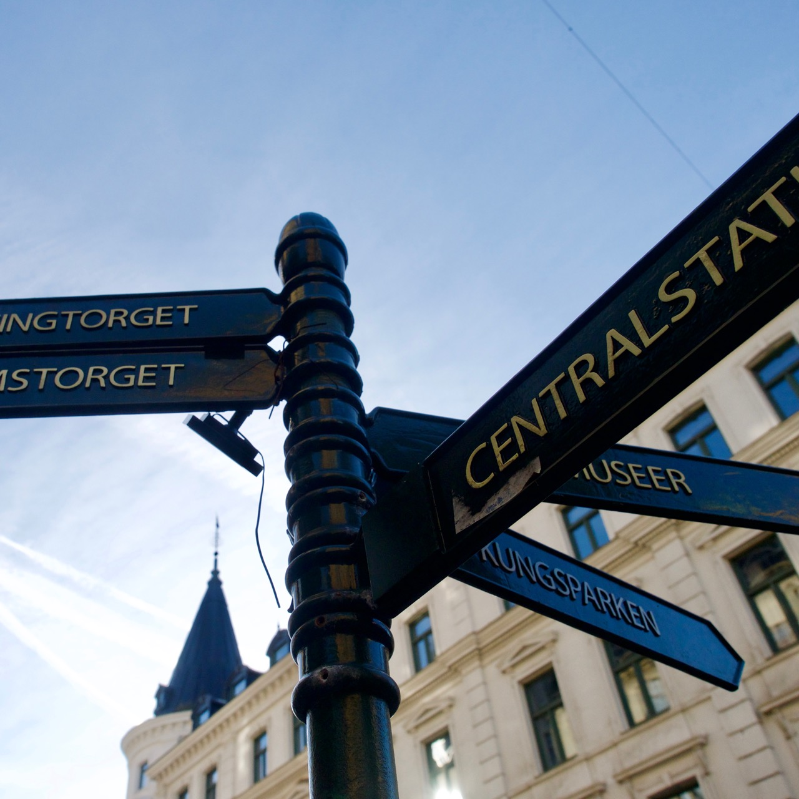
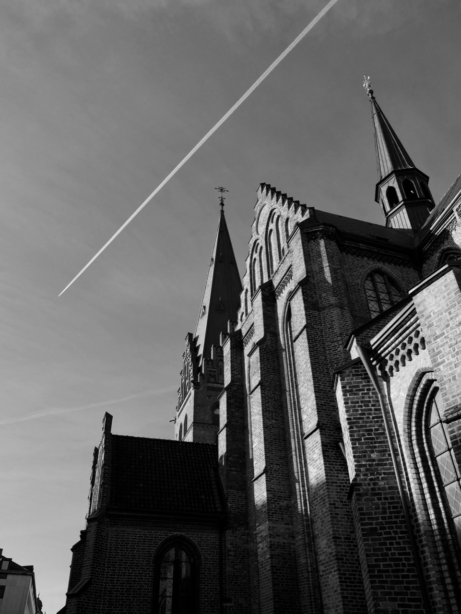
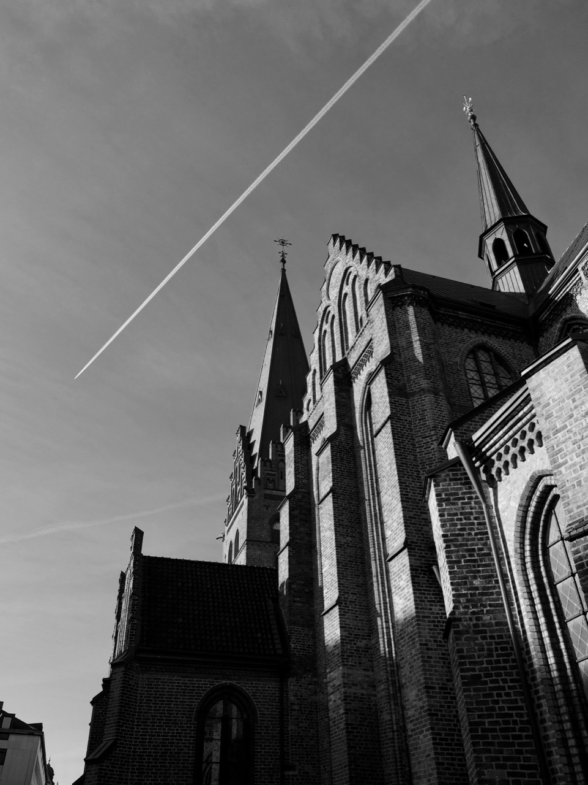
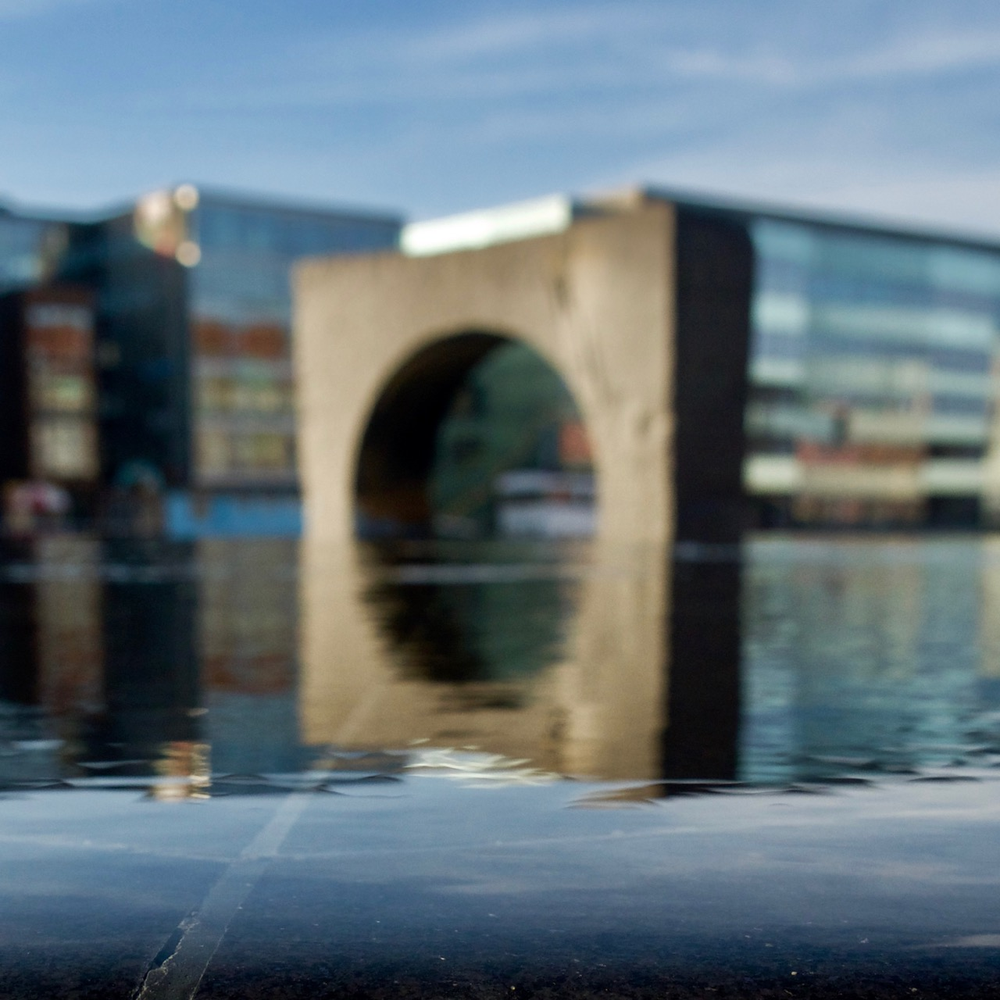
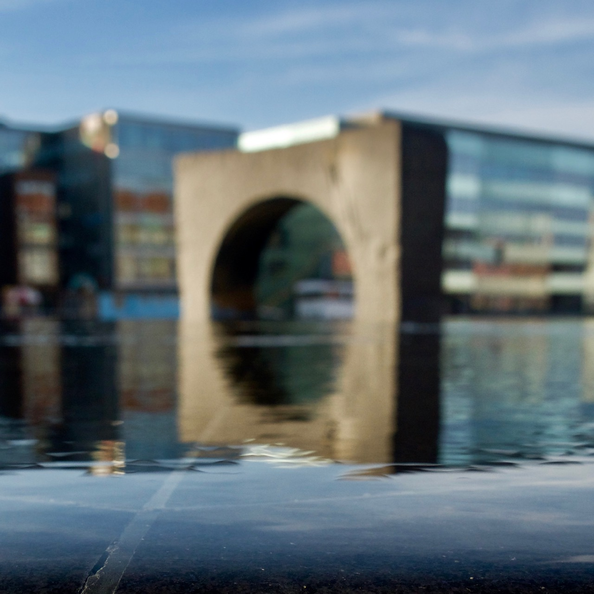

Alpha disclaimer:
The finished game will have an app that'll makes things smoother. Some thing missing from this alpha:
-
The app verifies that you have taken the correct photo, using sensors in your phone, such as GPS and gyro.
For the alpha: if you're in doubt about whether you have the correct angle, try taking the same photo with your phone to verify!
-
The app can show you the photo you're looking for overlaid on the camera view of the phone, letting you align the two photos in a satisfying way.
-
The app shows you which photos you have found, and which ones remain. Completing a number of photos will unlock more, to keep you from getting overwhelmed.
-
The app keeps track of the bounds of the play space and let you know if you're moving outside them, so you don't have to keep looking at the map.
Good luck, and have fun!
Play Space
The alpha takes place around Malmö central station. All the photos can be found within the area shown below.
Where were these photos taken?

 


do these harder ones when you feel ready


 


Thanks for playing!